ONE PIECE WANTED💀!
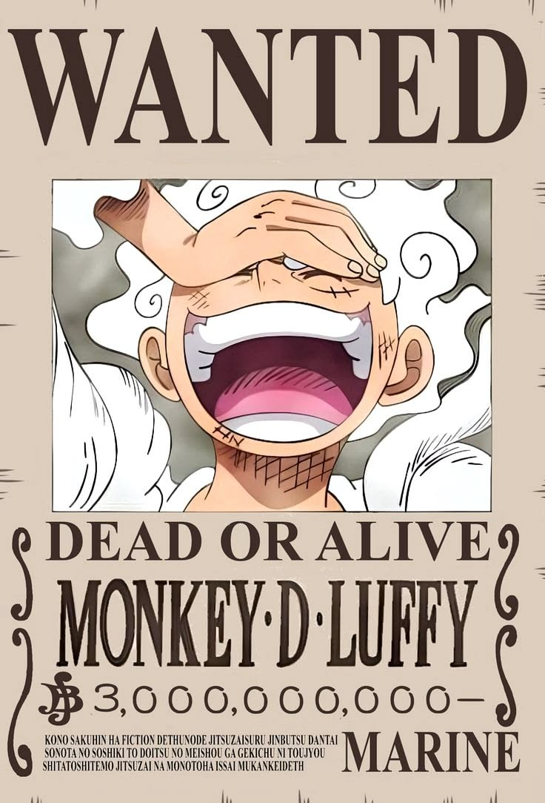
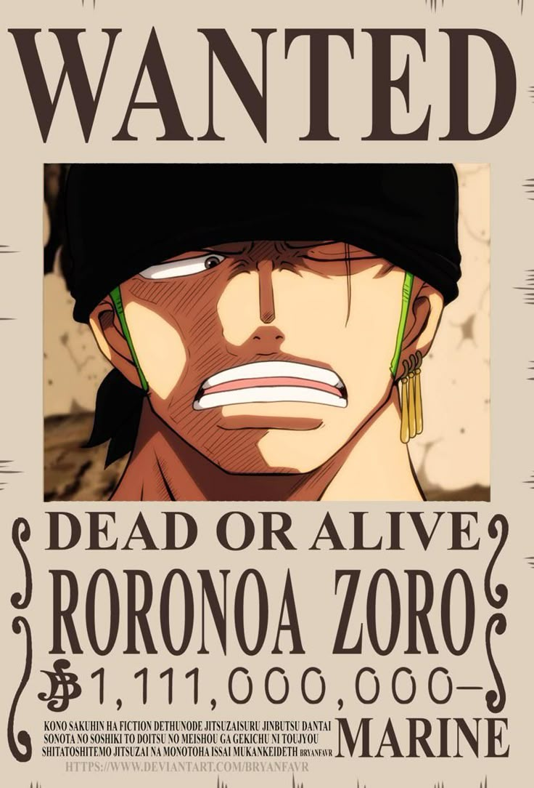
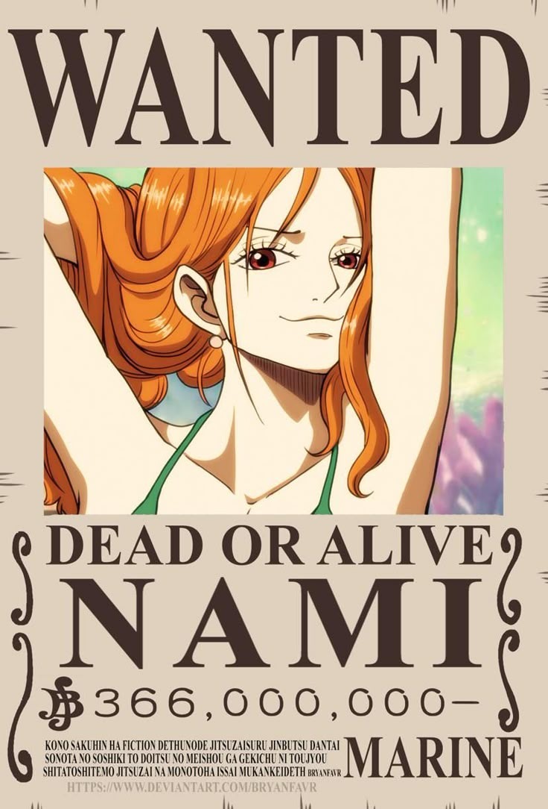
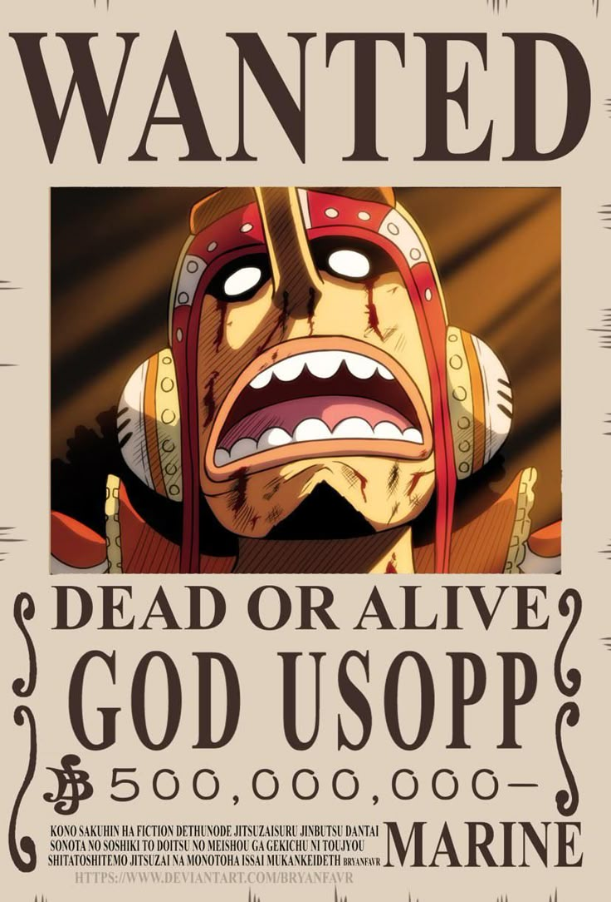
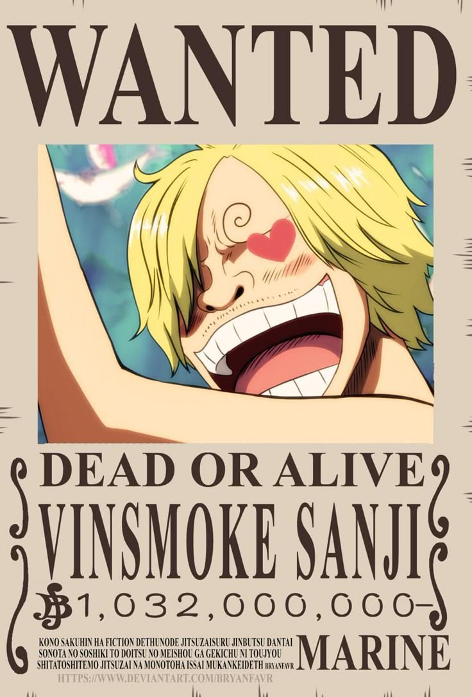
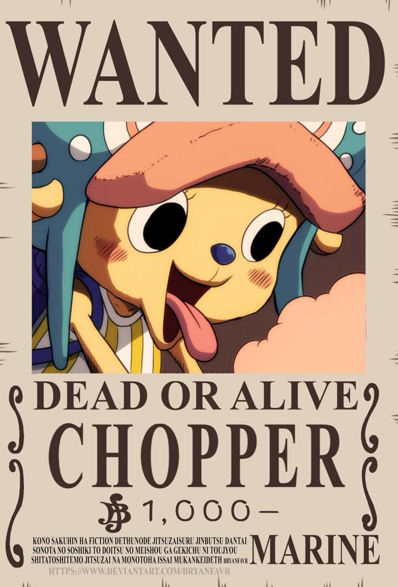
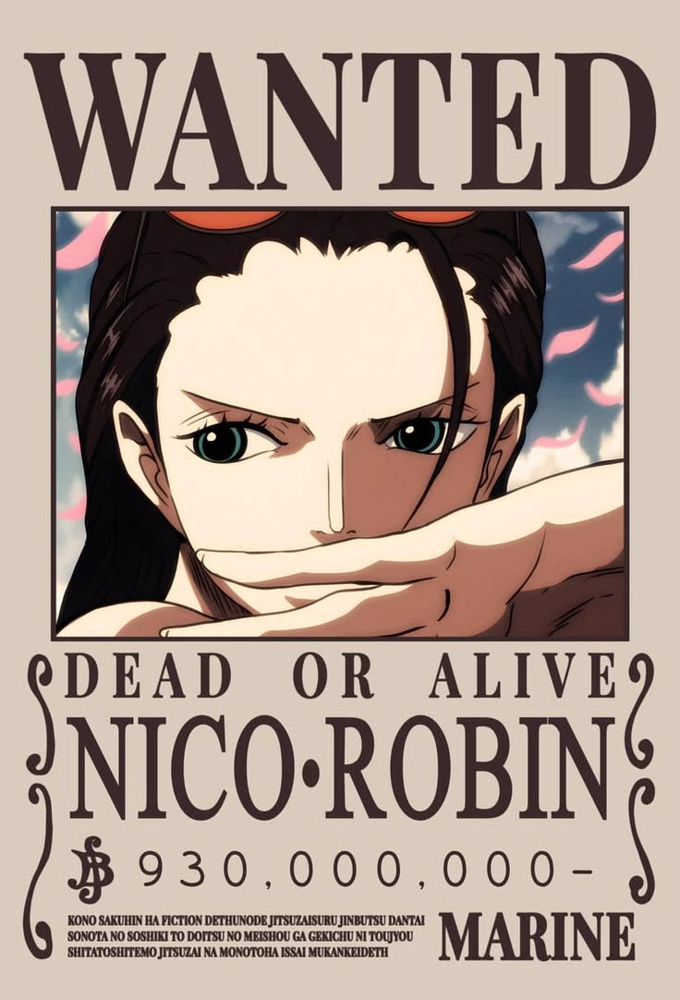
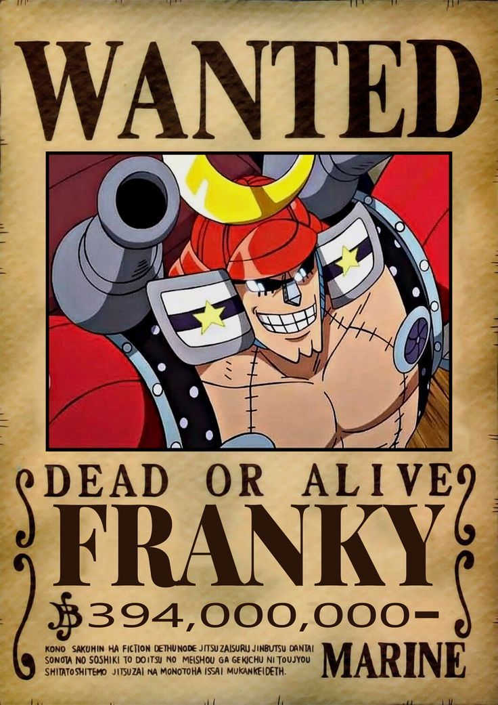
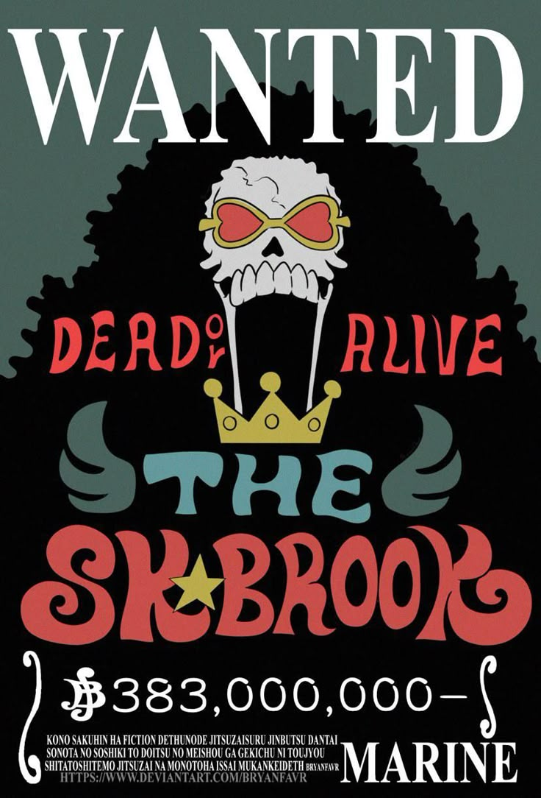
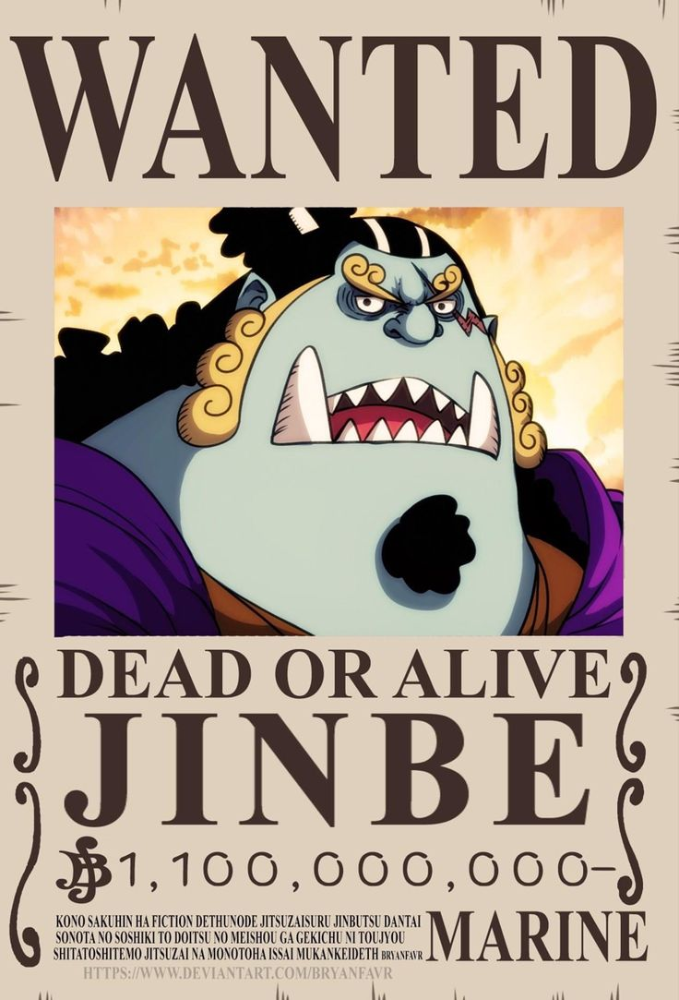
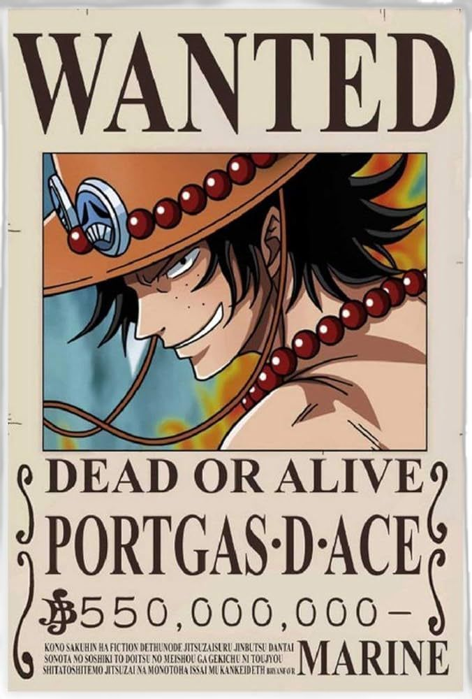
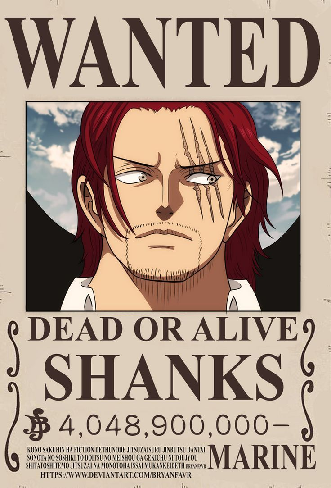
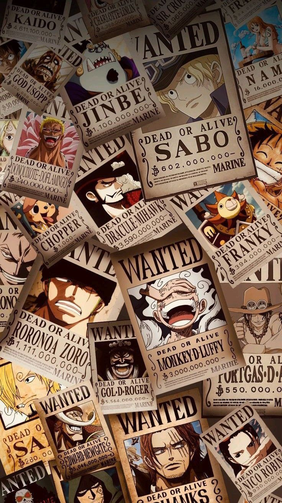
در دنیای گسترده و پرماجرای وانپیس، جایی که دریاها مملو از دزدان دریایی، موجودات قدرتمند، جزایر ناشناخته و اسرار فراموششده هستند، یکی از مهمترین نشانههای قدرت و شهرت هر دزد دریایی، میزان جایزهای است که برای دستگیری او تعیین میشود. پوسترهای معروف WANTED که تقریباً در تمام نقاط جهان وانپیس دیده میشوند، تنها کاغذهایی ساده با تصویر و مبلغ مشخص نیستند؛ بلکه نشاندهنده میزان خطری هستند که هر فرد برای نظم جهانی ایجاد میکند. این پوسترها به نوعی هویت دزدان دریایی را در جهان معرفی میکنند و مشخص میسازند که دولت جهانی تا چه اندازه حضور یک شخص را تهدیدآمیز میداند. در نگاه اول ممکن است تصور شود که جایزه هر دزد دریایی فقط بر اساس قدرت مبارزه، مهارت شمشیرزنی یا توانایی استفاده از میوه شیطانی تعیین میشود؛ اما واقعیت بسیار پیچیدهتر است. گاهی اطلاعاتی که یک فرد در اختیار دارد، اقداماتی که علیه دولت جهانی انجام داده یا حتی ارتباط او با اتفاقات تاریخی میتواند جایزهاش را به شکل قابلتوجهی افزایش دهد. به همین دلیل، سیستم WANTED یکی از مهمترین بخشهای ساختار سیاسی و اجتماعی دنیای وانپیس به شمار میرود.
مسئولیت تعیین و انتشار جایزههای دزدان دریایی بر عهده ساختارهای مرتبط با دولت جهانی و نیروی دریایی است. اطلاعات مربوط به افراد تحت تعقیب جمعآوری میشود و پس از بررسی، مبلغی برای دستگیری آنها مشخص میشود. این مبلغ معمولاً با توجه به مجموعهای از عوامل تعیین میشود: ۱. قدرت و توانایی مبارزه: قدرت فیزیکی، مهارتهای رزمی، توانایی استفاده از هاکی و قدرت میوههای شیطانی از عواملی هستند که میتوانند در ارزیابی خطر یک فرد تأثیر داشته باشند. ۲. میزان تهدید برای دولت جهانی: هر فردی که مستقیماً علیه ساختار قدرت دولت جهانی اقدام کند، ممکن است بهعنوان تهدیدی جدی شناخته شود. حمله به تأسیسات دولتی، مقابله با نیروهای دریایی و دخالت در رویدادهای سیاسی میتوانند باعث افزایش جایزه شوند. ۳. شهرت و نفوذ: گاهی یک دزد دریایی به دلیل نفوذ گسترده، تعداد افراد تحت فرمان یا توانایی ایجاد اتحادهای بزرگ، خطرناکتر از چیزی محسوب میشود که قدرت فردی او نشان میدهد. ۴. اطلاعات محرمانه: دانستن اسراری که دولت جهانی تلاش میکند پنهان باقی بمانند، میتواند یک فرد را به تهدیدی بسیار بزرگ تبدیل کند. در چنین شرایطی، حتی اطلاعاتی که یک شخص در اختیار دارد ممکن است از قدرت رزمی او مهمتر باشد. ۵. اقدامات و سابقه فعالیت: سابقه حمله به شهرها، شکست دادن دشمنان قدرتمند، فرار از زندانها و شرکت در نبردهای تاریخی نیز میتوانند در افزایش جایزه نقش داشته باشند. بنابراین، مبلغ جایزه همیشه نشاندهنده قدرت واقعی یک شخص نیست؛ بلکه میزان خطری را نشان میدهد که سیستم حاکم برای او در نظر گرفته است.
در دنیای وانپیس، دریافت جایزه بالا فقط به معنای معروف شدن نیست. این موضوع میتواند زندگی یک دزد دریایی را کاملاً تغییر دهد. هرچه مبلغ جایزه بیشتر باشد، افراد بیشتری برای دستگیری آن شخص تلاش میکنند. شکارچیان جایزه، گروههای رقیب و حتی دزدان دریایی دیگر ممکن است برای به دست آوردن پول تعیینشده وارد عمل شوند. از طرف دیگر، جایزه بالا باعث میشود نیروی دریایی و دولت جهانی توجه بیشتری به فعالیتهای فرد موردنظر داشته باشند. با این حال، جایزههای بالا همیشه به معنای برتری مطلق یک شخصیت نسبت به شخصیت دیگر نیستند. برای مثال، ممکن است یک فرد به دلیل اطلاعات خطرناک یا نفوذ سیاسی خود جایزه بیشتری نسبت به یک مبارز قدرتمند دریافت کند. به همین دلیل، مقایسه شخصیتها تنها بر اساس عدد روی پوسترهای WANTED همیشه نتیجه دقیقی به همراه ندارد.
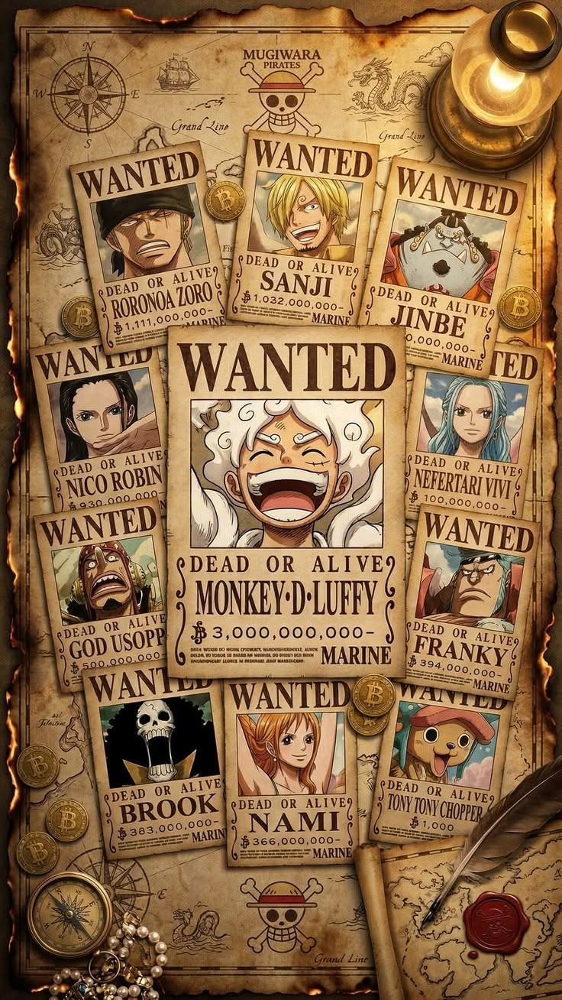
پوسترهای تحت تعقیب یکی از شناختهشدهترین عناصر بصری دنیای وانپیس هستند. این پوسترها معمولاً شامل تصویر فرد، نام او، مبلغ جایزه و عبارت معروف WANTED DEAD OR ALIVE هستند. این عبارت نشان میدهد که فرد موردنظر باید زنده یا مرده تحویل داده شود؛ البته در برخی پروندهها شرایط خاصی وجود دارد و ممکن است دستور دستگیری زنده صادر شده باشد. انتشار این پوسترها باعث میشود تصویر و نام افراد تحت تعقیب در مناطق مختلف جهان پخش شود. مردم میتوانند از طریق آنها دزدان دریایی معروف را بشناسند و شکارچیان جایزه نیز از مبلغ تعیینشده برای هر هدف مطلع شوند. نکته جالب این است که گاهی تصویر یک پوستر بهتنهایی میتواند نشانهای از یک اتفاق بزرگ باشد؛ برای مثال، افزایش ناگهانی جایزه یک شخصیت میتواند نشان دهد که او وارد مرحله جدیدی از فعالیتهای خود شده یا اتفاق مهمی در جهان رخ داده است.
یکی از جذابترین موضوعات درباره سیستم WANTED، تفاوت میان جایزه و قدرت واقعی است. در وانپیس شخصیتهایی وجود دارند که تواناییهای رزمی فوقالعادهای دارند، اما جایزه آنها لزوماً بالاترین مبلغ موجود نیست. در مقابل، بعضی افراد ممکن است به دلیل جایگاه سیاسی، اطلاعات حساس یا نفوذ گسترده، جایزه بسیار بالایی داشته باشند. برای مثال، جایزههای اعضای یک گروه دزدان دریایی ممکن است بر اساس نقش، قدرت، شهرت و میزان تهدید هر عضو متفاوت باشد. این تفاوت باعث میشود سیستم جایزهها فقط یک رتبهبندی ساده از قویترین افراد نباشد؛ بلکه تصویری از نگاه دولت جهانی به خطرات مختلف ارائه دهد.
در طول داستان وانپیس، بارها شاهد افزایش جایزه شخصیتها هستیم. این افزایش معمولاً پس از اتفاقات مهمی مانند شکست دشمنان قدرتمند، نابودی سازمانهای خطرناک، مقابله با نیروهای دریایی یا تغییرات بزرگ در موازنه قدرت جهان اتفاق میافتد. برای یک دزد دریایی، افزایش جایزه میتواند به معنای شناختهشدن بیشتر در جهان باشد؛ اما در عین حال خطرات بیشتری را نیز به همراه دارد. هرچه جایزه یک شخصیت افزایش پیدا کند، احتمالاً افراد بیشتری درباره او صحبت خواهند کرد و دشمنان قدرتمندتری به دنبال دستگیری یا شکست او خواهند بود. در واقع، هر عدد جدید روی پوستر WANTED میتواند نشاندهنده فصل تازهای از زندگی یک دزد دریایی باشد.
در جهان وانپیس، همه افرادی که به دنبال دزدان دریایی هستند عضو نیروی دریایی نیستند. گروهی از افراد مستقل نیز وجود دارند که به آنها شکارچی جایزه یا Bounty Hunter گفته میشود. این افراد با شناسایی و دستگیری دزدان دریایی تحت تعقیب، تلاش میکنند مبلغ تعیینشده برای آنها را دریافت کنند. شکارچیان جایزه میتوانند بهصورت انفرادی یا گروهی فعالیت کنند و بسته به تواناییهایشان، اهداف مختلفی را انتخاب کنند. البته دستگیری یک دزد دریایی با جایزه بالا کار سادهای نیست؛ زیرا معمولاً چنین افرادی قدرت زیادی دارند و ممکن است خدمه، متحدان و نیروهای محافظ قدرتمندی در اختیار داشته باشند.